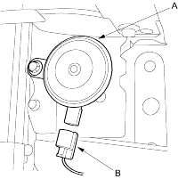
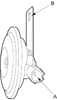

- Remove the front bumper (see page 20-104).
- Disconnect the 1P connector (B) and remove the horn (A).

- Test the horn by connecting battery power to the terminal (A) and grounding to the bracket (B). The horn should sound.

- If it fails to sound, replace it.